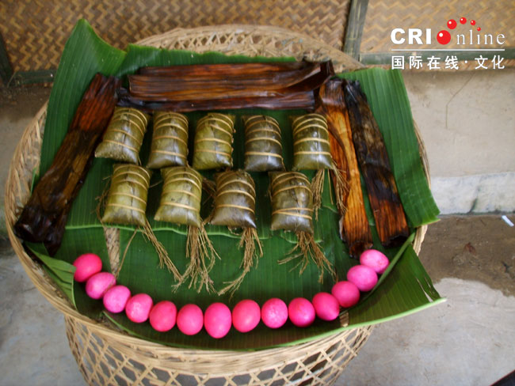

2006年8月，中国首个壮族稻作文化研究基地在云南省文山州富宁县老街三寨揭牌。当日的寨子里一片节日的喜庆，热闹非凡，让我们感受到了壮乡人民的热情，亲历了壮族特有的民风民俗。
中国壮族稻作文化研究基地在云南省文山州富宁县老街三寨揭牌。这是中国民间文艺家协会稻作文化委员会建立的首个壮族稻作文化研究基地，为研究稻作文明开辟了新的学术领域。
中国是水稻生产大国，也是稻作文明发源地。伴随着水稻种植的全过程，诞生了包括祭祀礼仪、诸神信仰、稻作工具、农田水利、稻作方法等等丰富多彩的稻作文化。此次活动选择在富宁县揭牌，是因为富宁县是著名的革命老区，物产丰富、风景秀丽、人杰地灵、壮族及各民族文化十分丰富。
中国民协副主席余未人强调，稻作文化是一门跨专业、跨学科、涵盖面和包容性极大的新型学科。希望与会的专家能运用民族学、文化人类学、考古学、神话学、经济学、历史学等多学科的知识，创造更多更新的研究方法，形成诸多学术流派，共同研究、开发稻作文化。
揭牌仪式后，参会的五十多位专家学者共同目睹了壮族特有的祭祀活动，参观了壮族稻作文化实物陈列，与富宁县老街三寨的村民共进晚餐并观看参与了民俗联欢晚会，更加深入彻底地了解了稻作文化的丰富和繁荣。
老街三寨准备迎来四方宾客
美丽的壮乡姑娘
壮乡欢迎队伍
老街三寨第一次迎来了这么多的专家、学者。
壮乡人民用阵阵掌声欢迎大家。
男女老少齐欢迎。
迎宾队伍中的小小姐妹花。
迎接客人的酒用竹筒装好。
以歌伴酒的拦路酒是客人必喝的。
由水稻专家袁隆平题词的中国首个稻作文化研究基地揭牌
敲起锣，打起鼓。
寨子里的老式榨糖机

结婚、生子或重大节日吃的喜蛋、粽子
做农活时用来遮阳的帽子。
挂在农家房梁上的稻穗。

品种不一的稻种。
打鱼用的工具。
装米、晒米的农具。
壮家自织的衣服。
八十多岁的老人现场表演纺线。
壮乡老人挑起竹筐去干农活。
壮家人祭祀活动一
壮家人祭祀活动二
壮家人吃饭用的桌子。
品尝壮乡色香味俱全的美食。
热情的壮乡大娘为各桌分五彩饭。